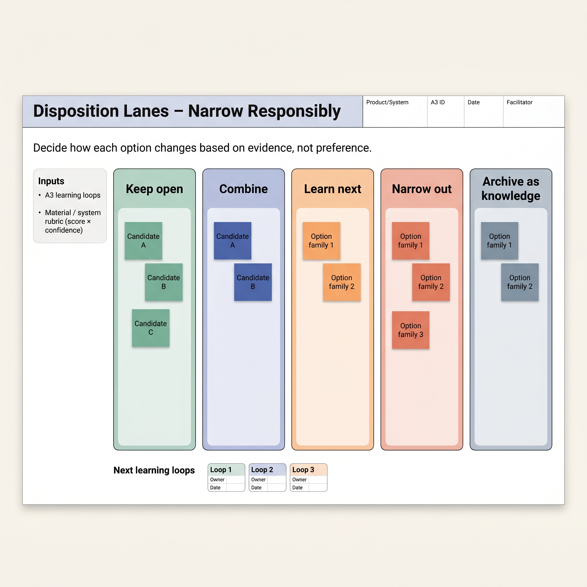

Why It Matters
The Decision Problem
"Most companies don't have a sustainability problem. They have a decision-making problem."
Sustainable design fails when teams commit too early. A material gets chosen in week two. A process route gets locked before manufacturing is in the room. An architecture decision settles before anyone has tested the lifecycle assumptions. Each early commitment closes a door — and behind those doors are often the best options.
The result is predictable: teams spend late-stage resources on workarounds rather than solutions. Regulatory requirements tighten, supplier materials change, and circular economy targets arrive after the design is frozen. You're not failing because you didn't care about sustainability. You're failing because the system forces premature decisions.
Point-based sustainable design picks one direction and refines it. When that direction hits a constraint — a supplier gap, a process incompatibility, an end-of-life problem — the team either backtracks expensively or ships a compromise. Set-based design changes the question from "which option is right?" to "what do we need to learn before we narrow?"
The Approach
The Core Shift
Planet-Based Set-Based Design applies set-based concurrent engineering to sustainability. Instead of converging on one sustainable solution path, teams define a set of viable candidates across multiple domains and narrow systematically — using learning, not assumptions, as the convergence signal.
| Point-Based Approach | Set-Based Approach |
|---|---|
| Pick the "best" sustainable material in week 2 | Define 3–5 material candidates; narrow after supplier testing |
| One process route evaluated in depth | Multiple process routes sketched, lensed, eliminated by data |
| Circularity retrofit at end of design | End-of-life scenarios included from the first set |
| Business model decided before product architecture | Business model options kept open until architecture stabilises |
| Sustainability = compliance checkpoint | Sustainability = shared constraint across all design domains |
The Solution Space
Five Sustainability Domains
Planet-Based Set-Based Design keeps five domains open simultaneously. Most approaches focus on one — usually materials. That's where the design waste hides. A great material choice attached to the wrong architecture, the wrong process, or the wrong business model is still a bad outcome.
Domain 1
Product Architecture
Modularity, disassembly, repairability, and platform choices. Architecture decisions lock in nearly every downstream sustainability outcome — keep them open longest.
Domain 2
Material System
Candidate materials scored across embodied carbon, recyclability, toxicity, supply security, and processability. Tracked with a structured rubric, not gut feel.
Domain 3
Manufacturing & Process
Energy intensity, scrap rates, process compatibility with chosen materials, and supplier sustainability credentials. Process routes evaluated concurrently with product options.
Domain 4
Use, Service & Circularity
In-use environmental impact, serviceability, take-back routes, remanufacturing viability, and end-of-life disposition. These options are only available if the architecture allows them.
Domain 5
Business Model & Supply Network
Ownership vs. access models, supply chain sustainability, traceability requirements, and regulatory positioning. Business model shapes what sustainability the company can actually deliver — and capture value from.
The Method
The Planet-Based A3 Learning System
The Planet-Based A3 is a single-page learning system that tracks the team's knowledge state across all five domains, stage by stage. It's not a deliverable — it's a working document that makes uncertainty visible so the team can decide what to learn next.
There are five stages. Each stage has a clear entry condition, a learning question, and an exit condition. A low-confidence score at stage exit is not failure — it's a signal to run another learning loop before narrowing.
Customer and societal context, regulatory landscape, existing product lifecycle data, and supply chain baseline. Define the five-domain set for this project. No narrowing yet.
Divergent generation. Sketch at least three candidates per domain. Use the material rubric for Domain 2. Populate disposition lanes with early impressions. Resist elimination at this stage.
Structured learning activities: supplier testing, prototype experiments, LCA estimates, circular economy scenario modelling. Score each candidate against rubric criteria. Update confidence levels.
Cross-domain comparison. Use disposition lanes to group candidates: proceed, watch, eliminate, redesign. Look for cross-domain dependencies: a material choice that enables or blocks a circularity option.
Converge on the set with the highest knowledge confidence. Document what was learned and why alternatives were eliminated. Low confidence = run another C–D loop before committing.
Tools & Templates
What You'll Work With
Two core visual tools support the learning system. Both are designed to be used on a physical or digital wall — not as spreadsheets.

Material System Rubric
Score each material candidate across six criteria: embodied carbon, recyclability, toxicity profile, supply security, processability, and circular end-of-life fit. Supports structured comparison at Stage D.

Disposition Lanes Board
Four lanes: Proceed, Watch, Eliminate, Redesign. Each option in the set gets a card. Cards move between lanes as learning accumulates. Makes the team's evolving knowledge state visible to everyone.
Template 3
Planet-Based A3 Worksheet
Single-page A3 format. Sections for all five domains, confidence scores per stage, and the learning question and exit condition for each stage A–E.
Template 4
Domain Set Canvas
Map your option set across all five domains in one view. Highlights cross-domain dependencies — e.g. a material choice that blocks or enables circularity options.
Template 5
Learning Sprint Planner
Plan the activities, owners, and timeline for a Stage C learning sprint. Output: updated rubric scores and revised disposition lanes ready for Stage D comparison.
All Templates — Google Drive Folder
Free to copy and adapt. Includes all five templates plus a quick-start guide for your first Planet-Based A3 session.
Audience
Who This Is For
Planet-Based Set-Based Design is most useful when you're in the early-to-middle phases of product development — after you know what problem you're solving, but before architecture and material decisions become expensive to reverse.
Getting Started
What Changes Monday Morning
You don't need a new development process to start. These six actions work inside any existing programme.